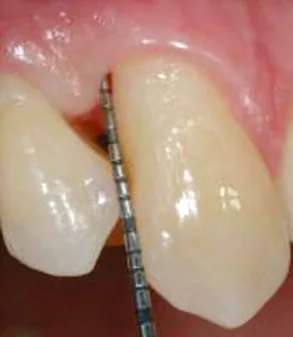

نسخه استخراجشده؛ ترجمه یا تأیید علمی انجام نشده است. وضعیت: captured
فاصله لبه مارجین لثه تا کف پاکت.

⚠️ مشکل: نقطه شروع این اندازهگیری یعنی لبه مارجین، متحرک است. با تورم بالا میرود و با تحلیل لثه پایین میآید. پس PD میتواند بدون هیچ تغییری در بیماری، کم یا زیاد شود.
فاصله اتصال مینا-سمان (CEJ) تا کف پاکت.
✅ مزیت: نقطه شروع یعنی CEJ یک لندمارک ثابت آناتومیک است که با التهاب یا تحلیل تغییر نمیکند.
CAL مقدار واقعی چسبندگی از دست رفته را نشان میدهد، مستقل از اینکه لثه در چه وضعیتی است. به همین دلیل است که تعریف موردی پریودنتیت و استیجینگ هر دو بر CAL استوارند، نه بر PD.
CAL = PD + مقدار تحلیل لثه
مثال: PD برابر ۴ میلیمتر و تحلیل ۲ میلیمتر ⬅️ CAL برابر ۶ میلیمتر.
CAL = PD − فاصله CEJ تا مارجین
مثال: PD برابر ۵ میلیمتر و مارجین ۲ میلیمتر بالای CEJ ⬅️ CAL برابر ۳ میلیمتر.
CAL = PD
| پاکت کاذب | پاکت واقعی | |
|---|---|---|
| علت | تورم و بزرگشدگی لثه | مهاجرت آپیکالی اپیتلیوم اتصالی |
| CAL | صفر یا حداقل | افزایشیافته |
| با کنترل التهاب | برطرف میشود | باقی میماند |
📌 به همین دلیل هرگز نمیتوان فقط با PD، پریودنتیت را از ژنژیویت جدا کرد.
⚠️ بزرگشدگی لثه که پاکت کاذب میسازد، در بیماران ارتودنسی و در مصرفکنندگان فنیتوئین، سیکلوسپورین و نیفدیپین شایع است؛ در این بیماران پیش از هر تفسیری CAL را بسنج.
خطای معمول اندازهگیری پریودنتال حدود ±۱ میلیمتر است. پیامد مستقیم این محدودیت:
⚠️ تغییر یک میلیمتری را نمیتوان پیشرفت یا بهبود واقعی دانست. برای اعلام تغییر معنادار، معمولاً به تغییر ۲ میلیمتر یا بیشتر نیاز داریم.
PD میتواند با تغییر وضعیت لثه نوسان کند بدون آنکه بیماری تغییر کرده باشد.
مثال مهم: پس از جراحی رزکتیو، PD کاهش مییابد اما CAL ممکن است بدتر شده باشد چون مارجین به سمت آپیکال رفته است. اگر فقط PD را ببینی، فکر میکنی درمان موفق بوده.
در هر ویزیت پایش، هر دو عدد را ثبت کن: PD برای ارزیابی قابلیت تمیز کردن ناحیه، و CAL برای سنجش واقعی وضعیت بیماری.
⚠️ اشتباه رایج ۱: در تحلیل لثه، CAL از PD بیشتر است.
⚠️ اشتباه رایج ۲: کاهش PD همیشه بهمعنای بهبود نیست؛ CAL را ببین.
⚠️ اشتباه رایج ۳: تغییر یک میلیمتری در محدوده خطاست، نه پیشرفت.
نوع سؤال: ساخت کلمه · 3 خانه
حروف منبع: ع · م · ج